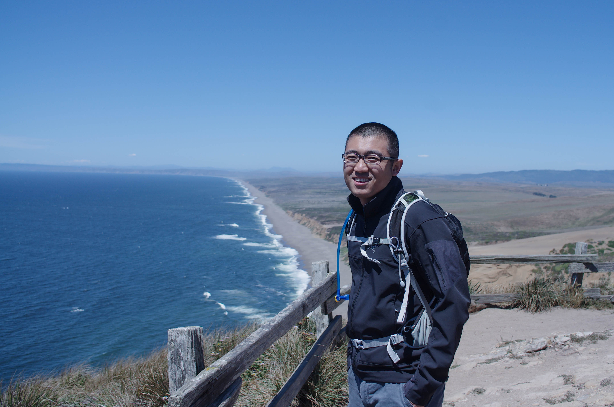

Phone:+1 (908)-208-0416
Welcome
About Me:
My name is Wentian Zhou. I am a Ph.D student in Electrical Engineering at LCSEE department, West Virginia Univerisity. Currently, I am working as a Graduate Research Assistant(GRA) at Video and Image Processing(VIP) Lab.
My research supervisors are Dr. Daryl Reynolds and Dr. Xin Li. My current research focuses on image processing with machine learning techniques to enhance ill-posed inverse problems.
Research Interests:
Image Super-resolution/upsampling, Image Denosing, Un-supervised learning/clustering, Neural Networks